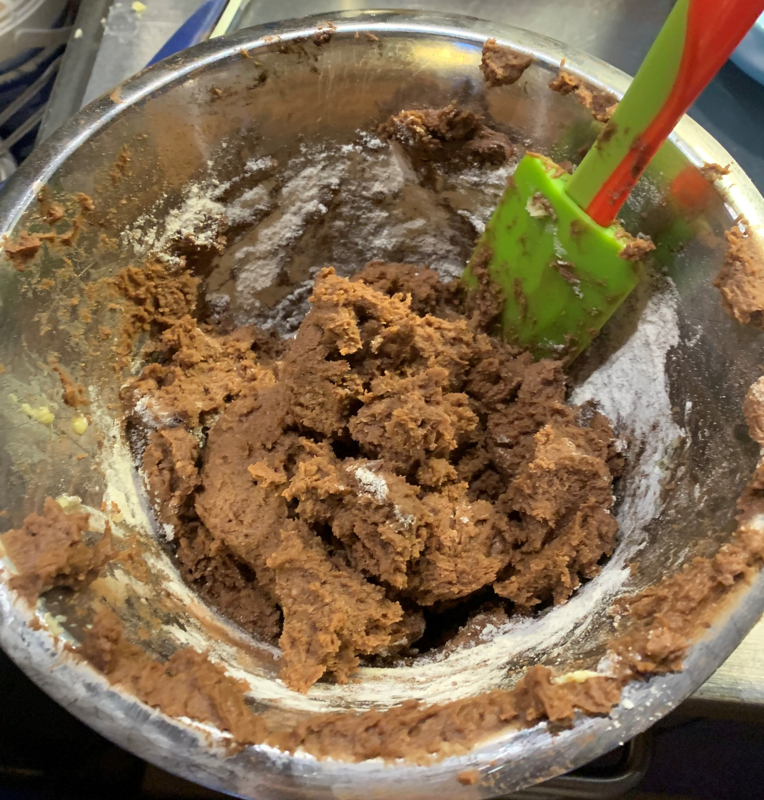
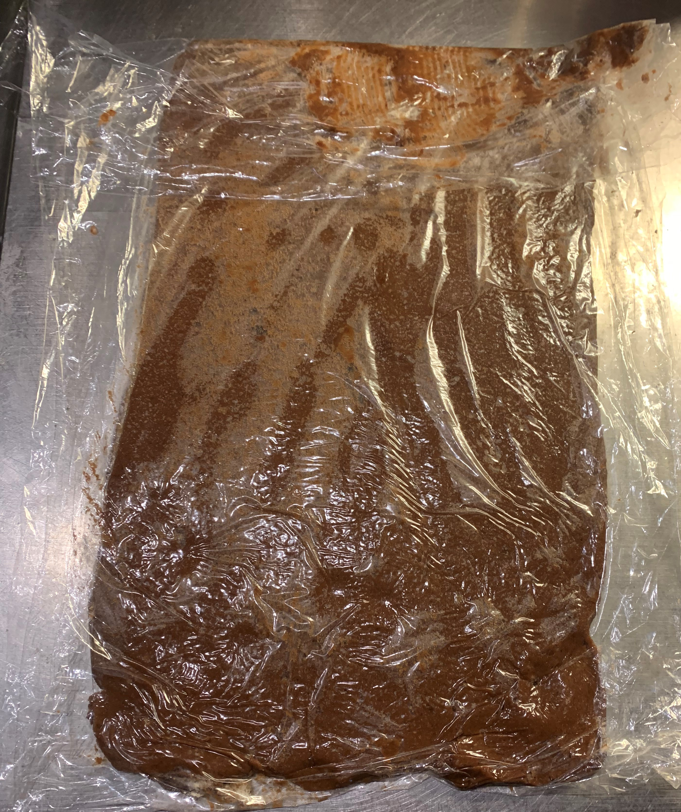
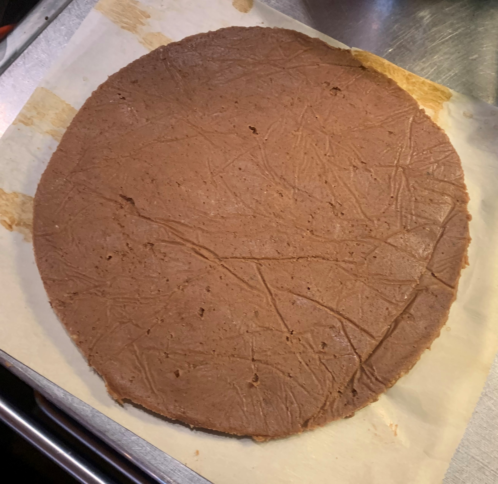
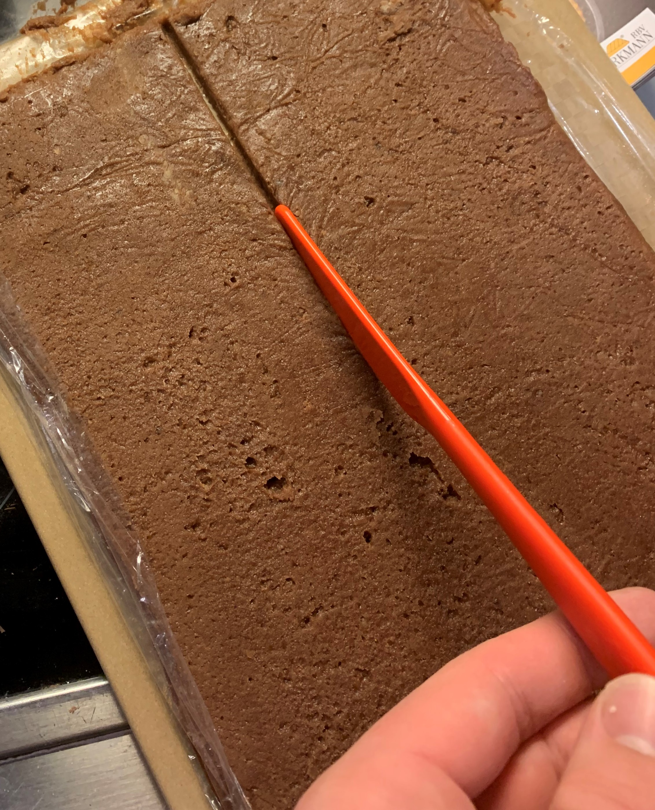
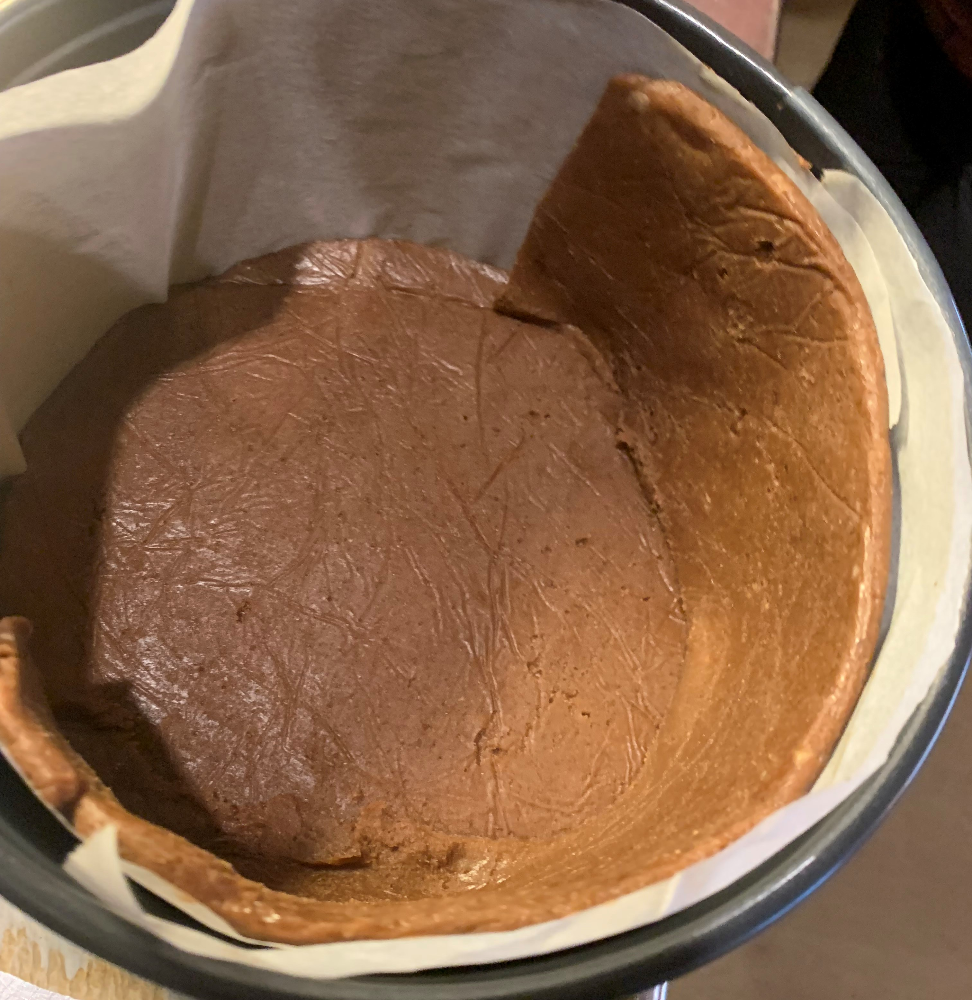
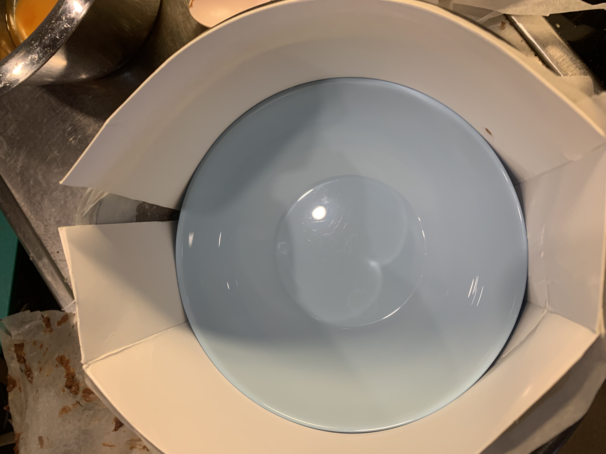
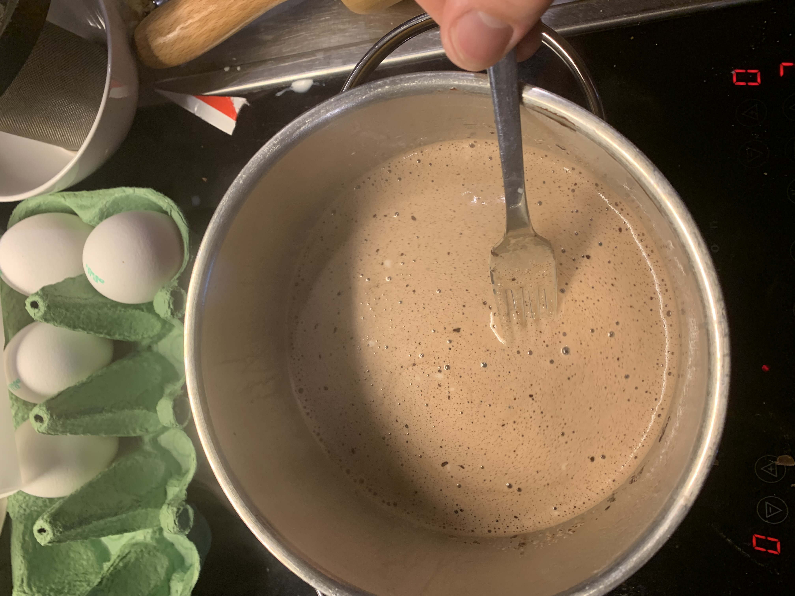
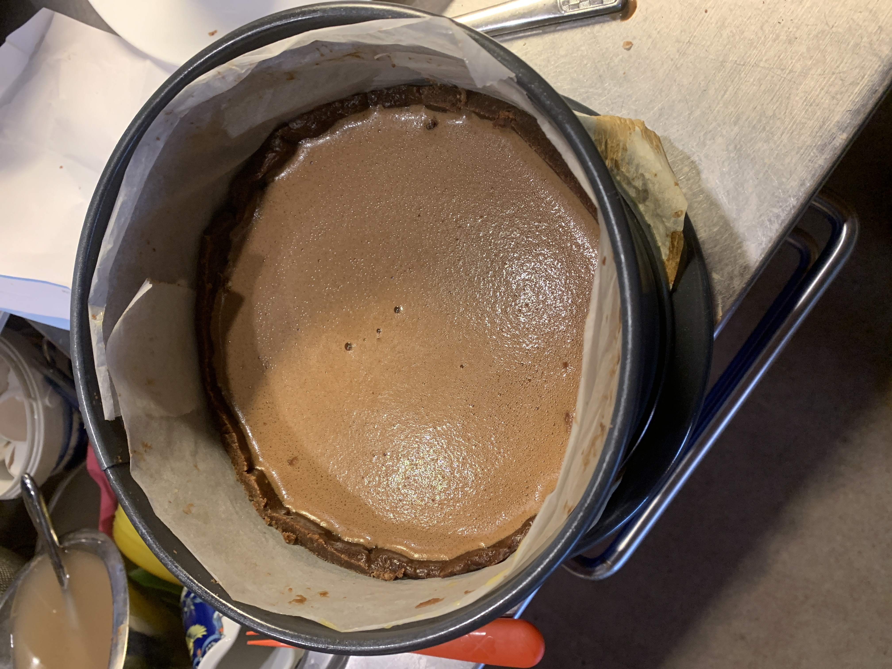
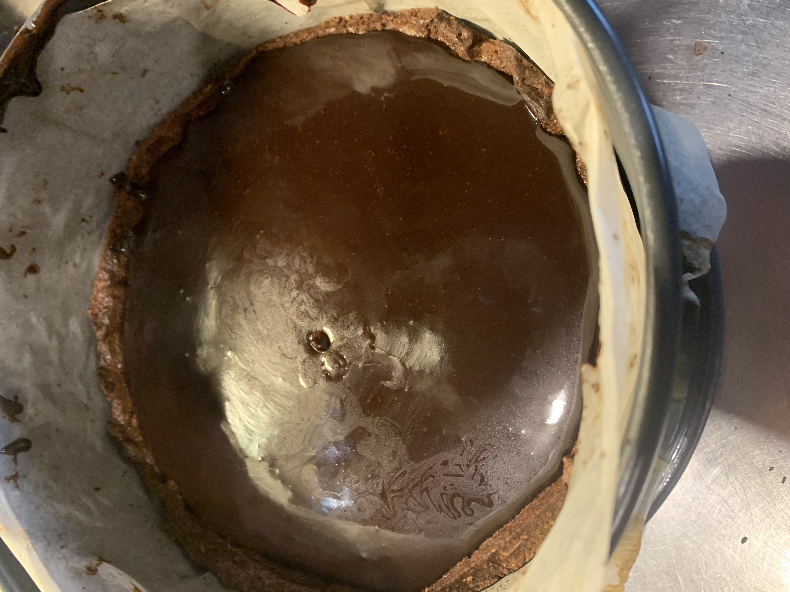

Documentation
I started by taking 120 grams of unsalted butter, which I mixed with 105 grams of powdered sugar until the resulting substance was homogeneous. I then whisked an egg, added it to my butter and sugar and mixed it until it became homogeneous. I then did the same with a second egg. After that, I added 45 grams of ground almond, 20 grams of cocoa powder, 75 grams of bread flour and about 200 grams of cake flour. Once again, I mixed everything until a homogeneous substance emerged.
Once this was done, I divided the dough into two pieces. I then covered the said pieces in plastic wrap and rolled them out into 5mm thick rectangles. After that was done, I places the pieces of dough in a refrigerator for about one hour.
Once cool enough, I removed the dough from the refrigerator and cut the pieces apart to fit in my mould.
 Once everything was of the appropriate size, I put it inside the mould.
After cooling it again, I put something inside to press down on the bottom piece of dough so is wouldn't rise and let it bake for 20 minutes in a 180 degrees preheated oven. Unfortunately, it didn't go well the first time. Because of this, I have a piece of advice for anyone who wants to replicate this; don't just have something press against the floor of the mould. Do the same with the walls. Otherwise, they'll simply melt. On my second attempt, everything worked. After I was done baking it, I put it into the freezer to cool it down and prepare it for what I was going to do a little later on.
After baking, I put this to the side and whisked four eggs in a bowl. I then added 100 grams of sugar and whisked the ingredients until a homogeneous substance appeared. Then, I cut 150 grams of chocolate (2/3 very dark chocolate, 1/3 brown chocolate). Next, heated up 300 grams of milk together with 240 grams of heavy cream. Once this mixture was warm, I added the chocolate and let it melt inside. I then poured the chocolate milk through a thinly meshed sieve into the mixture of eggs and sugar. This was done slowly whilst I was whisking it. The resulting ganache would be my filling for the cake.
After letting my ganache cool down for a while, I took out the partially baked dough from the freezer and poured my ganache into it through a very thinly meshed sieve.
After having put the ganache into the baked dough, I baked it in a preheated oven (180 degrees) for 55 minutes. After baking, I let the cake cool down.

Then, I mixed 15 grams of water and 3 grams of gelatin and let them wait. I then mixed 20 grams of cocoa powder and 60 grams of sugar with 60 grams of cream and 45 grams of milk. I warmed this mixture to an almost boiling temarature and added 30 grams of chocolate (20 grams dark chocolate, 10 grams brown chocolate) to let it melt. Once it was melted, I took it off the stove and added the gelatin. Afterwords, I took the rest of the cake and poured this new mixture on top through a sieve.
after letting everything cool down one last time, I was finally done.